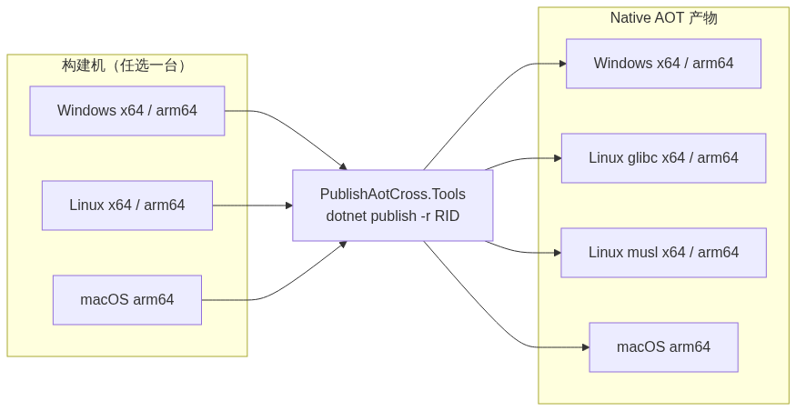

开箱即用：一条命令构建全平台，无需为每个平台准备构建机
你用 .NET 写了个服务，开启了 Native AOT，想要极致启动速度和单文件部署。现在要把产物发到多个平台：Windows、Linux，还有 macOS。
于是你在 CI 里写下：
dotnet publish -c Release -r linux-x64
结果迎面一行红字：
error : Cross-OS native compilation is not supported.
翻文档才知道：Native AOT 依赖每个操作系统的原生链接器，微软官方只支持同平台构建——Windows 上只能构建 Windows，Linux 上只能构建 Linux。想跨平台？要么为每个平台准备一台构建机，要么自己折腾交叉编译工具链。
如果你也被这个问题卡过，这篇文章就是为你准备的。
先说为什么大家还是想用 Native AOT：
代价就是开头那个报错：它的跨平台能力先天不足。
装 Visual Studio C++ 工具链：只能在 Windows 上用，安装包 5GB+，CI 里装它最重。
用 Docker 交叉构建：配置繁琐、每次拉镜像、不适合 Windows 目标，也搞不定 macOS。
手动配置交叉编译工具链：能行，但要自己下载编译器、配环境变量、管版本，CI 里还得维护一堆脚本。
共同点：都不够“开箱即用”。
PublishAotCross.Tools 是一个 NuGet 包。加上它，你就能在一台机器上，用自己的 dotnet publish，直接产出所有目标平台的 Native AOT 二进制。
加一个包引用就行。

任选一台构建机（Windows / Linux / macOS）→ 一条
dotnet publish -r <rid>→ 产出 Windows、Linux（glibc / musl）、macOS 的 Native AOT 产物。
在已经开启 Native AOT 的项目里：
<Project Sdk="Microsoft.NET.Sdk">
<PropertyGroup>
<OutputType>Exe</OutputType>
<TargetFramework>net10.0</TargetFramework>
<PublishAot>true</PublishAot>
<InvariantGlobalization>true</InvariantGlobalization>
<RuntimeIdentifiers>win-x64;win-arm64;linux-x64;linux-arm64;linux-musl-x64;linux-musl-arm64;osx-arm64</RuntimeIdentifiers>
</PropertyGroup>
<PropertyGroup>
<DebugType>none</DebugType>
</PropertyGroup>
<ItemGroup>
<PackageReference Include="PublishAotCross.Tools" Version="1.0.1.13" />
</ItemGroup>
</Project>
支持 .NET 8 / 9 / 10，<TargetFramework> 按你的项目填即可。
<DebugType>none</DebugType> 表示不保留调试符号；符号剥离会自动完成，无需手工设置，产物已很精简。
# Windows（无需 C++ 工具链）
dotnet publish -c Release -r win-x64
dotnet publish -c Release -r win-arm64
# Linux（glibc）
dotnet publish -c Release -r linux-x64
dotnet publish -c Release -r linux-arm64
# Linux（musl / Alpine）
dotnet publish -c Release -r linux-musl-x64
dotnet publish -c Release -r linux-musl-arm64
# macOS（Apple Silicon）—— 不需要 Mac
dotnet publish -c Release -r osx-arm64
就这些。全部在本机完成，不用切系统、不用装工具链。
这些命令在 Windows、Linux、macOS 上任一宿主都能跑。比如在 Linux CI 上执行
-r osx-arm64，就能直接得到可在 Apple Silicon 运行的二进制。
习惯用 IDE 也行：在 Visual Studio（如 VS2026）里，把发布配置的目标运行时选成对应 RID，直接点「发布」即可，效果与命令行一致。
任一宿主都能产出全部目标平台：
| 构建机（宿主） | 可产出的目标平台 |
|---|---|
| Windows x64 / arm64 | Windows x64/arm64 · Linux glibc x64/arm64 · Linux musl x64/arm64 · macOS arm64 |
| Linux x64 / arm64 | 同上 |
| macOS arm64 | 同上 |
一句话：任选一台机器（Windows、Linux 或 macOS），就能产出全部目标平台的产物；即便是 macOS arm64 产物，也不需要 Mac。
/p:GlibcVersion=2.35（指定 glibc 版本）/p:StripSymbols=false/p:AotPreferCustom=false以 GitHub Actions 为例，一个 runner 就能打包全部平台，连 Mac 都不用：
name: Publish Native AOT
on:
push:
tags: [ 'v*' ]
jobs:
build:
runs-on: ubuntu-latest
strategy:
matrix:
rid:
- win-x64
- win-arm64
- linux-x64
- linux-arm64
- linux-musl-x64
- linux-musl-arm64
- osx-arm64
steps:
- uses: actions/checkout@v4
- uses: actions/setup-dotnet@v4
with:
dotnet-version: 10.0.x
- name: Publish for ${{ matrix.rid }}
run: dotnet publish -c Release -r ${{ matrix.rid }}
- uses: actions/upload-artifact@v4
with:
name: app-${{ matrix.rid }}
path: bin/Release/net10.0/${{ matrix.rid }}/publish/
不用为每个平台准备构建机，不用装 VS，不用维护 Docker 镜像，也不用排队等 macOS runner。
Q：macOS 产物在 Apple Silicon 上能直接跑吗？ 可以，无需额外签名。
Q：对构建机有什么要求？ 安装 .NET SDK 即可，无其他编译依赖（无需 Visual Studio 的 C++ 工具链或 Docker）。
Q：支持哪些 .NET 版本和 RID？ .NET 8+；目标 RID 见上面的支持矩阵。
如果你的项目也在为“发布多个平台”头疼，尤其是“要出 macOS 就得有台 Mac”这件事——
加一个 NuGet 包，把 .csproj 里的 RID 列表补上，然后敲一条 dotnet publish 就好了。
dotnet add package PublishAotCross.Tools欢迎 Star、提 Issue、提 PR。祝构建顺利。